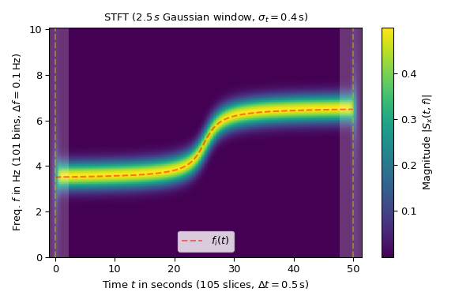

Provide a parametrized discrete Short-time Fourier transform (stft)
and its inverse (istft).
The stft calculates sequential FFTs by sliding a
window (win) over an input signal by hop increments. It can be used to
quantify the change of the spectrum over time.
The stft is represented by a complex-valued matrix S[q,p]
where the p-th column represents an FFT with the window centered at the
time t[p] = p * delta_t = p * hop * T where T is the sampling
interval of the input signal. The q-th row represents the values at the
frequency f[q] = q * delta_f with delta_f = 1 / (mfft * T) being
the bin width of the FFT.
The inverse STFT istft is calculated by reversing the steps
of the STFT: Take the IFFT of the p-th slice of S[q,p] and multiply the
result with the so-called dual window (see dual_win). Shift the result by
p * delta_t and add the result to previous shifted results to reconstruct
the signal. If only the dual window is known and the STFT is invertible,
from_dual can be used to instantiate this class.
Due to the convention of time t = 0 being at the first sample of the input
signal, the STFT values typically have negative time slots. Hence,
negative indexes like p_min or k_min do not indicate counting
backwards from an array’s end like in standard Python indexing but being
left of t = 0.
Mode of FFT to be used (default ‘onesided’).
See property fft_mode for details.
mfft: int | None
Length of the FFT used, if a zero padded FFT is desired.
If None (default), the length of the window win is used.
dual_winnp.ndarray | None
The dual window of win. If set to None, it is calculated if
needed.
scale_to‘magnitude’, ‘psd’ | None
If not None (default) the window function is scaled, so each STFT
column represents either a ‘magnitude’ or a power spectral density
(‘psd’) spectrum. This parameter sets the property scaling to the
same value. See method scale_to for details.
phase_shiftint | None
If set, add a linear phase phase_shift / mfft * f to each
frequency f. The default value 0 ensures that there is no phase shift
on the zeroth slice (in which t=0 is centered). See property
phase_shift for more details.
Examples
The following example shows the magnitude of the STFT of a sine with
varying frequency \(f_i(t)\) (marked by a red dashed line in the plot):
>>> importnumpyasnp>>> importmatplotlib.pyplotasplt>>> fromscipy.signalimportShortTimeFFT>>> fromscipy.signal.windowsimportgaussian...>>> T_x,N=1/20,1000# 20 Hz sampling rate for 50 s signal>>> t_x=np.arange(N)*T_x# time indexes for signal>>> f_i=1*np.arctan((t_x-t_x[N//2])/2)+5# varying frequency>>> x=np.sin(2*np.pi*np.cumsum(f_i)*T_x)# the signal
The utilized Gaussian window is 50 samples or 2.5 s long. The parameter
mfft=200 in ShortTimeFFT causes the spectrum to be oversampled
by a factor of 4:
>>> g_std=8# standard deviation for Gaussian window in samples>>> w=gaussian(50,std=g_std,sym=True)# symmetric Gaussian window>>> SFT=ShortTimeFFT(w,hop=10,fs=1/T_x,mfft=200,scale_to='magnitude')>>> Sx=SFT.stft(x)# perform the STFT
In the plot, the time extent of the signal x is marked by vertical dashed
lines. Note that the SFT produces values outside the time range of x. The
shaded areas on the left and the right indicate border effects caused
by the window slices in that area not fully being inside time range of
x:
>>> fig1,ax1=plt.subplots(figsize=(6.,4.))# enlarge plot a bit>>> t_lo,t_hi=SFT.extent(N)[:2]# time range of plot>>> ax1.set_title(rf"STFT ({SFT.m_num*SFT.T:g}$\,s$ Gaussian window, "+... rf"$\sigma_t={g_std*SFT.T}\,$s)")>>> ax1.set(xlabel=f"Time $t$ in seconds ({SFT.p_num(N)} slices, "+... rf"$\Delta t = {SFT.delta_t:g}\,$s)",... ylabel=f"Freq. $f$ in Hz ({SFT.f_pts} bins, "+... rf"$\Delta f = {SFT.delta_f:g}\,$Hz)",... xlim=(t_lo,t_hi))...>>> im1=ax1.imshow(abs(Sx),origin='lower',aspect='auto',... extent=SFT.extent(N),cmap='viridis')>>> ax1.plot(t_x,f_i,'r--',alpha=.5,label='$f_i(t)$')>>> fig1.colorbar(im1,label="Magnitude $|S_x(t, f)|$")...>>> # Shade areas where window slices stick out to the side:>>> fort0_,t1_in[(t_lo,SFT.lower_border_end[0]*SFT.T),... (SFT.upper_border_begin(N)[0]*SFT.T,t_hi)]:... ax1.axvspan(t0_,t1_,color='w',linewidth=0,alpha=.2)>>> fort_in[0,N*SFT.T]:# mark signal borders with vertical line:... ax1.axvline(t_,color='y',linestyle='--',alpha=0.5)>>> ax1.legend()>>> fig1.tight_layout()>>> plt.show()

Reconstructing the signal with the istft is
straightforward, but note that the length of x1 should be specified,
since the SFT length increases in hop steps:
>>> SFT.invertible# check if invertibleTrue>>> x1=SFT.istft(Sx,k1=N)>>> np.allclose(x,x1)True
It is possible to calculate the SFT of signal parts: